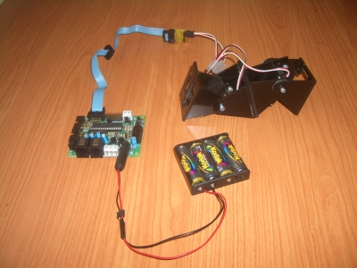

Usando la versión 0.2 de los micro-osciladores, he programado un ejemplo de locomoción del robot Minicube-I. El robot se está moviendo de manera autónoma. Todo el software se ejecuta en el PIC de la Skypic, sin necesidad de conectarse a un PC.
Pero lo mejor es verlo en un vídeo:

De momento he implementado un comportamiento muy sencillo: cada vez que se apriete el pulsador S1 de la Skypic, el robot cambia el sentido del movimiento.
El siguiente paso es crear una placa pequeña, con un PIC y meterla dentro del robot. La placa la he bautizado como Skymin. Por último hay que sustituir las pilas por baterías pequeñas para que también se puedan meter dentro del robot. De esto se está encargando Ricardo Gómez. Muchas gracias 😉